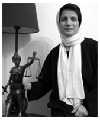

پذيرش > اخبار > 1600 نفر خواستار آزادی نسرین ستوده شده و از وضعیت او ابراز نگرانی کردند


 1600 نفر خواستار آزادی نسرین ستوده شده و از وضعیت او ابراز نگرانی کردند 1600 نفر خواستار آزادی نسرین ستوده شده و از وضعیت او ابراز نگرانی کردند
25 مهر 1389 - - نسخه قابل چاپ
تغییر برای برابری : نسرین ستوده وکیل مدافع حقوق بشر و فعال جنبش زنان از روز 13شهریور در بازداشت به سر می برد و از سوم مهر در اعتصاب غذا است و امکان هیچ گونه تماس و ارتباطی را با خانواده و وکلای خود نداشته است. در اعتراض به بازداشت این وکیل مدافع حقوق بشر و فعال حقوق زنان تاکنون بیانیه های گوناگونی از سوی موکلان ایشان و فعالن جنبش زنان ایران منتشرشده است . اخبرا نیر دو بیانیه منتشر شده که طی این دو بیانیه حدود 1600نفر خواستار آزادی فوری و بی قید و شرط او شدند. متن و خبر مربوط به این دو بیانیه در زیر آمده است.
خبر به زبان انگلیسی را در لینک زیر ببینید
http://www.irangenderequality.com/
بیانیه اعتراضی بیش از 900 تن از کنشگران جنبش زنان و فعالان مدنی؛
از به خطر افتادن سلامتی نسرین ستوده بیمناکیم
بیش از 900 نفر از کنشگران جنبش زنان، فعالان حقوق بشر و موکلان نسرین ستوده در بیانیه ای نگرانی خود را نسبت به ادامه بازداشت نسرین ستوده در شرایطی که در اعتصاب غدا به سر می برد ابراز داشته، مقامات قضایی را مسئول حفظ سلامت وی دانسته و خواستار آزادی بدون قید و شرط وی شده اند.
نسرین ستوده، وکیل دادگستری و فعال جنبش زنان، از 13 شهریور 1389 در سلول انفرادی بند 209 زندان اوین بسر می برد و نگرانی ها از وضعیت سلامت وی به شدت افزایش یافته است. این وکیل دادگستری، از 3 مهرماه در اعتصاب غذاست، و تقریبا یک ماه است که هیچ تماسی با خانواده نداشته است و همین مسئله باعث شده که در مورد سلامت وی نگرانی های بسیاری را دامن بزند. در ادامه متن بیانیه به همراه اسامی امضاء کنندگان آمده است.
از به خطر افتادن سلامتی نسرین ستوده بیمناکیم
هر روز، روزنه های بیشتری بر مدافعان حقوق بشر بسته می شود. کانون مدافعان حقوق بشر بسته می شود. پروانه وکالت برخی از وکلای جسور و پیگیر مدافع حقوق بشر لغو می شود. وکلایی که جرمی جز دفاع از موکلان خود و قدرت بخشیدن به آنان در مقابل قدرقدرتی سیستم قضایی ندارند، به زندان می افتند؛ و دیگر مدافعان حقوق بشر به احکام سنگین زندان محکوم می شوند. در این میان، نسرین ستوده وکیل شجاع و پی گیر حقوق بشر و حقوق زنان از تاریخ 13 شهریور در زندان به سر می برد. وی از سوم مهرماه، لب بر غذا بسته است و در این مدت به جز تلفنی کوتاه که در آن خبر اعتصاب غذایش را داده است، هیچ خبری از او نیست. این بی خبری مطلق از وضعیت نسرین ستوده، همسر، کودکانش و ما فعالان حقوق زنان و حقوق شهروندی را بسیار نگران ساخته است. ما از به خطر افتادن سلامتی نسرین ستوده بیمناکیم و از مراجع قضایی خواهان پاسخگویی هستیم. مبادا که همچون نرگس محمدی، بی مبالاتی برخی نامسئولان سلامتی نسرین ستوده را نیز به مخاطره اندازد. نسرین ستوده، جز دفاع از شرف انسانی جرمی مرتکب نشده است. جرم او دفاع از کودکانی است که تلخی زندگی آنان را به زندان فرستاده است. جرم او دفاع از زنان و مردانی است که جز عادلانه کردن قوانینی که زندگی را بر انسان ها دشوار کرده است، جرمی ندارند. جرم نسرین ستوده دفاع از موکلانی است که به دلیل عقایدشان در زندانند. نسرین ستوده خود به چارچوب های مبارزه قانونی سخت پایبند است و دفاع از موکلانش را در چارچوب های قانونی به پیش برده است. جرم نسرین ستوده تلاش در جهت گسترش عدالت در نظام قضایی است. تلاش های نسرین ستوده شایسته تقدیر است نه مجازات. ما جمعی از فعالان حقوق زنان و حقوق بشر و نیز موکلان و دوستداران نسرین ستوده سخت نگران جان او هستیم و مقامات قضایی را مسئول حفظ سلامت وی می دانیم. درخواست ما آزادی بدون قید و شرط و فوری نسرین ستوده از زندان است.
اسامی امضاء کنندگان:
احترام شادفر، احترام صانعی، احسان سپید، احسان عبداله زاده، احسان نجفی یزدی، احمد خادمی، احمد زینالی، احمد محمدی، اختر قاسمی، ارزو حسینی، اسد علیمحمدی، اسد گلچینی، اسماعیل ختائی، اسماعیل رضایی، اشکان رضوی، اشكان ذهابيان، اصغر ساکت، اعظم احمدی، اعظم اسدی، اعظم رحیلی، افروز مغزی، افسانه بیرانوند، افسانه ثبوت، افسانه فخار، افسانه ماهور، افسانه ملکی، اقبال اقبالی، اقدس چرونده، اکبر آقایی، اکبر عطری، اکرم ابویی، اکرم اصیل، اکرم خیرخواه، اکرم سلامتی، اکرم شیرخانی، اکرم مانی، اکرم محمدی، البرز جواهری لنگرودی، الکسی ویگنان، الناز امجدی، الناز محمدی، الناز وتوقی، الهام اذری، الهام قیطانچی، الهام کوثری، الهه صارمی، الینا آذری، امید فاطمی، امید هوشیار، امیر ارامش، امیر بهبهانی، امیر بیگلری، امیر جواهری لنگرودی، امیر حسین گنج بخش، امیر رازی، امیر رشیدی، امیر رضا امیر بختیار، امیر رضانژاد، امیر صابری، امیر فاضلی، امیر گرگانی، امیر گمنام، امیر ممتاز، امیرحامد صلحی نيا، امین احمدیان، امین نصر، اميد كوهى، انور میرستاری، ایران آزادی، ايمان بابايي، ایمان پاشا، ایمان پاک نهاد، ايمان کاظمی مهر، آذر پناهی، آذر عفيف، آذر منصوری، آراز. م. فنی، آرزو آزادی، آرش اعلم، آرش بهمنی، آرش عاشورینیا، آرش قربانی، آرش نصیری اقبالی، آرش هژبری، آریو سورستانی، آریو مالکی، آزاد مرادیان، آزاد یاسمین، آزاده امیری، آزاده خسروشاهی، آزاده دواچی، آزاده رحمتی، آزاده فرامرزيها، آزاده کیان، آزیتا پیران نادری، آزیتا رحیم پور، آزیتا شعاعی، آزین ایزدی فر، آس فتوحی، آسیه امینی، آمنه زمانی، آمنه کریمیان، آناهیتا رازقی، آیدا ابروفراخ، آیدا اقصائی، آیدا سعادت، آیدا قجر، آیسان زرفام، بابک رامین، باران عدالت، بامشاد تابناک، بامشاد ثمین، بانو صابری، بردیا سلامت، برنارد ویگنان، بلال مرادویسی، بنفشه بهبودی، بنفشه جمالی، بنفشه حجازی، بهار مجدزاده، بهارا بهروان، بهارک اعتمادی، بهارک صادقی، بهاره امین، بهاره بهبودی، بهاره شرقی، بهداد بردبار، بهرام امامی، بهرام بوستانی، بهرام بیگدلی، بهرام چوبینه، بهرام رحیمی، بهرام شفیعی، بهرام گودرزی، بهروز اسدیان، بهروز تنهایی، بهروز جاودان، بهروز علوی، بهروز نیما، بهزاد لقمانی، بهمن اسکویی، بهمن امینی، بهمن عیار، بهمن مباشری، بهناز صالحی، بهنام امجدی، بهنام بهشتی، بهنام داوری، بهنام فرهت، بیزن افتخاری، بیژن باوند، بیژن پیرزاده، بیژن فرد، بیژن معجری، بیژن نصیری، بيژن حيدريان، پانته آ بهرامی، پدرام جاویدان، پرتو نوری علا، پردیس درخشنده، پرستو اله ياري، پرستو دوکوهکی، پرستو فروهر، پروانه سجادی، پروانه موکاریان، پرویز داورپناه، پرویز شام بیاتی، پرویز مختاری، پروین اردلان، پروین بختیارنژاد، پروین پرتوی، پروین دارابی، پروین ذبیحی، پروین ملک، پری مولودی، پری ناز صبحی، پریناز فکوری، پریسا آزاده، پریسا ناصری، پریسا تربتی، پریسا تنکابنی، پریسا روشن فکر، پگاه رازی، پگاه رضایی، پوران رضایتی، پوریا زادمهر، پولاد جواهری لنگرودی، پیام مرادی، پیمان جعفری، پیمان حسینی، پیمان ملاذ، تارا عظيما، ترانه ایرانی، ترانه صدیق، ترانه میرعماد، تندیس پازوکی، توران ارجمند، توران رحمتی، تورنج پاشائی، تهمینه امیری، تینا مرادی، ثریا پناهنده، جادى میرمیرانى، جلال بزرگ نیا، جلوه جواهری، جمشید آیین دار، جواد جمشیدی، جواد منتظری، جهان دخت عظیمی، جهان نور مهربخش، جهانگیر لقائی، جیران مقدم، حامد راد، حامد کیائی، حامد لاسکی، حبیبه رسولی، حسن به گر، حسن جعفری، حسن درويش پور، حسن صدری، حسن فاضل، حسن نايب هاشم، حسین افصحی، حسین اقتداری، حسین امجدی، حسین ثابت، حسین خرمی، حسین رازی، حسین علوی، حسین میرمبینی، حسين آيتي، حمید بی ازار، حمید حمیدی، حمید رضا مسیبیان، حمید رفیع، حمید سرداری، حمید صدر، حمید ندایی، حمیدرضا حسینی، حمیدرضا خادم، حمیدرضا صابری، حمیده نظامی، حميد روشن، حنا دارابی، خدیجه مقدم، خرسند ستوده، خرم عصیان، خسرو برهمندی، خسرو بندری، خسرو تجربه کار، خسرو رحیمی، خسرو سیف، خسرو موریم، داریوش آریایی، داریوش آشوری، دانیال بهروز، دانیال زینالی، داوود دارابی، درنا بندری، دلارام علی، دنیا برزگر، دیبا نجاتی، راحله امینی، راحله میرزایی، راستین پوریا، راضیه به گو، راضیه سبحانی، رامین امن گستر، رحیم پاوه، رخساره شمشیری، رخساره قائم مقامي، رزا فرج الهی، رزاحسامی، رژین بهاوری، رسول زینایی، رسول علی دوست، رسول موحدی، رضا احمدی، رضا ترابی، رضا پویا، رضا جاهد، رضا جمالی، رضا جوادی، رضا حسینی نسب، رضا دانش، رضا سیاووشی، رضا شاهد، رضا عطار، رضا کرمی، رضا کریمی، رضا ماسولی، رضا محبت، رضا منوچهری، رضا هیوا، رضوان مقدم، رقیه گوهر زاد، روجا بندری، روح الله نجفی، روشنک آسترکی، رومینا خجسته، رویا پاکزاد، رویا سرمست، رویا صحرائی، رویا کاشفی، رويا طلوعي، رها عسکری زاده، ریحانه جدیدفرد، ریحانه جندقی، زارا امجديان، زاگرس اندریاری، زری بیاتی، زری ماسولی، زویا اسکندریان، زویا امین، زویا نیک، زهرا پورعزیزی، زهرا توفیق، زهرا سیادتی، زهرا نجاتی، زهره اسدپور، زهره شاکری، زهره صابری، زهره ماسولی، زینب پیغمبرزاده، زینب شمشیری، ژاله حریری، ژاله سروستانی، ژیلا بنی یعقوب، ژیلا پورحاجیان، ژیلا میرزایی، ژینا سیلورمان، ساحل آسایش، سارا اسمی زاده، سارا ایمانیان، سارا برزگر، سارا داودیان، سارا زارع، سارا زمانی، سارا سماواتی، سارا علوی، سارا نورایی، سارا نوری، ساره فرازی، ساسان پیروزی، ساسان عزتی، ساقی قهرمان، سامره پاریاب، ساناز حاجی، ساناز شبانی، ساناز محسن پور، سپهر عاطفی، سپیده سالاروند، سپیده کلانتریان، سپیده نصیری، سپیده یوسف زاده، ستاره پورسعدی، ستاره هاشمی، ستوده حکیم، سحر امجدی، سحر دولت، سحر رضا زاده، سحر غلامی، سحر فرجی، سحر مفخم، سجاد عظیمی، سراج میردامادی، سرود آوایی، سرور متین، سروش رحمانی، سروناز صدری، سعدی علیزاده، سعید پیوندی، سعید سجو، سعید شروینی، سعید شریفیان، سعید فتاحی، سعید مدنی، سعید ملکی، سعید هاشداری، سعید هیوا، سعیده اسلامی، سکینه رازدار، سمانه بوستانی، سمانه خرم، سمانه شریفی، سمانه عابدینی، سمانه نجاتی، سمیرا جودکی، سمیرا قهرمانلو، سمیه اردشیری، سمیه رشیدی، سمیه فراهانی، سودابه فرخ نیا، سوده راد، سوسن رستگار، سوسن شعبانی، سوسن طهماسبی، سوفیا صدیق پور، سولمازایکدر، سهراب بهداد، سهراب مهدوی، سهند حسینی، سهیل آصفی، سهیلا افتخاری، سهیلا حقیقت، سهیلا ستاری، سهیلا سمند، سیامک کمان ابرو، سیاوش نجفی، سیبل ملکی، سید حسن، سید سعید موسوی، سیدجعفر احمدی، سیروس اردلان، سیلوا هارطونیان، سیما حسین زاده، سیما رضایی، سیمین صبری، شادی پورمحمدی، شادی جنتی، شادی رامین، شادی صداقت، شادی صدر، شاهد رسولی، شاهین انزلی، شاهین همتی، شبنم حاجی، شریفه بوستانی، شعله الهی، شعله ایرانی، شعله آتش، شعله شاهرخی، شعله شفیعی، شقایق کمالی، شمزین اخوان، شمس تولایی، شهاب الدین شیخی، شهاب سردار، شهاب مباشری، شهاب موسوی، شهر آزاد، شهرزاد آل داود، شهرزاد ماسولی، شهره ماسولی، شهره موحدی، شهریار پویان راد، شهلا انتصاری، شهلا بهار دوست، شهین کمیاب، شهین مقدم، شیرین پاریاب، شیرین دخت نورمنش، شیرین عزتی، شیرین عزیزی، شیرین فامیلی، شیوا اولیا، شیوا بدیهی نژاد، شیوا نوجو، شيما فرزادمنش، صادق جوکار، صادق دولتی، صادق فرمانبر، صادق کار، صادق نقاشزاده، صبا جودکی، صبا واصفی، صبرا رضایی، صبری نجفی، صحر صنیعی، صدر صالحی، صدیقه فخرآبادی، طرقه آقایی، طلعت تقی نیا، طه زینالی، طیبه سلیمی، طیبه مینویی، عاطفه شریفی، عاطفه گلبرگ، عالیه فرهت، عالیه ماهباز، عاليه مطلب زاده، عباس زمانی، عباس زینالی، عباس صولتی، عباس مظاهری، عزیز کرملو، عزیز منجمی، عسگر آهنین، عسل اخوان، عسل هاشمی، عشاء مومنی، عفت ماهباز، عفت محبتی، علی اشرافی، علی افشاری، علی اکبر خسروشاهی، علی اکبر موسوی خویینی، علی اكبر مهدی، علی ایلبگی، علی آزاده، علی بکائی، علی پرویز، علی پورنقوی، علی حجت، علی حسینی، علی رستمی، علی شبسستان، علی صادقی، علی طایفی، علی عبدی، علی فتوتی، علی فروزنده، علی کاویانی، علی گوشه، علی ماهباز، علی مقدم، علی ملک زاده، علی ملک، علی ملک زاده، علی میرفتروس، علی ندیمی، علی واعظی پور، علی همتی، علی هنری، علیرضا ذوقی، علیرضا سوگوار، على مهتدى، علي نيكوئي، عليرضا آساراب، عنایت کتولی، غزال شولی زاده، غزل صحرایی، غلامحسین اصغری، غلامحسین رئیسی، فاطمه حقیقت جو، فاطمه خانی، فاطمه رحمانی، فاطمه رضایی، فاطمه سروش، فاطمه سهرابی، فاطمه فرهنگ خواه، فاطمه گوارایی، فاطمه میزانی، فائزه سلیمانی، فتانه عباسی، فتانه کیان ارثی، فخری شادفر، فخری نامی، فرح ربیعی، فرح شیلان، فرح طاهری، فرحناز بختیاری، فرحناز جلالی، فرحناز محمدی، فرخ پایمردی، فرخنده جبارزادگان، فرزانه امجدی، فرزانه پارسايي، فرزانه خیری، فرزانه عظیمی، فرزانه قربانی، فرزانه نظری، فرزین کمالی، فرشاد آریا، فرشته قاضی، فرشه فراهانی، فرشید بامشاد، فرناز حقیقت، فرناز سیفی، فرناز کامران، فرناز کمالی، فروزان راسخ، فروغ بیگلری، فروغ تقی زاده، فروغ تمیمی، فروغ سمیع نیا، فرهاد خسروخاور، فرهاد سلحشور، فرهاد قمر، فرهاد میثمی، فرهاد نعمانی، فریبا تحقیقی، فریبا داودی مهاجر، فریبا عظیمی، فریبا هنری، فرید رستگار، فرید فرخی، فرید مرجایی، فریدون خاوند، فریده صبحی، فریده غائب، فریندخت مشکات، فريده پورعبدالله، فیروز آذر، فیروزه آقایی، فیروزه بهاور، فیروزه مهاجر، قاضی ربیحاوی، کاظم بهبودی، کاظم علمداری، کامران چنگیزیان، کامران سروری، کامران شاهد، کاملیا ارجمند، کامیار بهرنگ، کامیار رحمتی، کامیار صدری، کاوه بهادری، کاوه حکمت، کاوه رضائی شیراز، کاوه صلاحی، کاوه قریشی، کاوه کرمانشاهی، کاوه مظفری، کبری قاسمی، کتایون عظیم فرد، کتایون قیوم، کریم پورحمزاوی، کریم صبوری، کمال ارس، کمال افهاهی، کمال کوشان، کورش زعیم، کوروش خوش بیان، کوروش صحتی، کوروش فرزین، کوکب بهداروند، کیارش کیان تاج، کیان مهاجری، کیانا کریمی، کیانوش سنجری، کیوان خوش بیان، کیوان رحمتی، کیوان رخساره، کیومرث جوادی، کیومرث عابد، گرجی مرزبان، گلاله بهرامی، گلناز به گو، گلناز غبرایی لنگرودی، گلومه وگنان، گلی ایرانی، گوارا شهسواری، گوهر بیات، گیل آوایی، گيلان نصيری، لادن بازرگان، لادن رستم زاده، لادن فردوسیان، لاله سلیمی، لوا زند، لیثی حبیبی - م. تلنگر، لیدا پرچمی، لیدا حسینی نژاد، لیلا اسدی، لیلا پرویز، لیلا خاتم، لیلا خسروی، لیلا شوکری، لیلا صحت، لیلا فرجامی، لیلا فرجی، لیلا موری، لیلی بهبهانی، لیما سلیمی، ليلا اسفاري، ماری لادیه فولادی، ماریا جواهری، مازیار مهرپور، ماکسیم وگنان، مانا امیری، ماندانا کایدی، ماهور وجدی، مجتبی چمرانی، مجید امیدوار، مجید تولایی، محبوبه حسین زاده، محبوبه محبی، محبوبه مرزبان، محبوبه منصوری، محترم پورحسینی، محترم نجفی، محسن برزگر، محسن بیات، محسن پورحسینی، محسن رضوانی، محسن فرهت، محسن قائم مقام، محسن نژاد، محمد احمدی، محمد اویسی، محمد باقری، محمد برزنجه، محمد حسیبی، محمد خانلرزاده، محمد رضا رقابی، محمد رضا نم نبات، محمد شوراب، محمد شیرزاد، محمد صابر، محمد علی اصلانی، محمد علی مهرآسا، محمد غزنويان، محمد لسکی، محمد نجفی، محمدرضاراعي، محمود خاکبان، محمود مرادخانی، مراد خورشیدی، مرتضی ملک محمدی، مرتضي صارمي، مرجان افتخاری، مرجان قهرمانی، مرضیه افشار، مرضیه بخشی زاده، مرضیه زادبر، مرضیه شکیبا، مریم اشرافی، مریم امجدی، مریم باقری، مریم بوستانی، مریم بهرمن، مریم حاج محسن، مریم حسین خواه، مریم حقی، مریم راستی، مریم رحمانی، مریم زندی، مریم شاهمرادی، مریم شرفی، مریم صفا، مریم قاسمی، مریم کاویانی، مریم محسنی، مریم محمدی، مریم منجزی، مریم منزوی، مریم میرزا، مریم یاسمین شیرازی، مژگان تقی نیا، مژگان ثروتی، مژگان جعفریان، مژگان رحمتی، مژگان قاسمیان، مژگان مسئولی، مستانه ترکمنی، مسعود بیگی، مسعود زمانی، مسعود شاکری، مسعود شب افروز، مسعود فتحی، مسعود میلانی، مصطفا قهرمانی، مصطفی دقیقی اصلی، مصطفي نيلي، مظفر ادب، معصومه جدی، معصومه حیدری فرامرزی، معصومه رخشان، معصومه زمانی، معصومه شیخی، معصومه ضياء، معصومه لقمانی، ملایکه علم هولو، منصور ابراهیمی، منصور خازی، منصور دماوندی، منصور نجاتی، منصوره رضایی، منصوره شجاعی، منصوره کریمی، منوچهر فاضل، منوچهر ملکی، منوچهر موحد، منیره بخشی زاده، مو. نجف زاده، مونا پرویزی، مونا پیری، مونا مهرنیا، مهتاب لاله، مهدی ترابی، مهدی ماهباز، مهديه فراهاني، مهراد صابری، مهران براتی، مهران زرچی، مهرپویا رحیمی، مهرداد ترابی، مهرداد رضوانی، مهرداد طالبی، مهرداد مشایخی، مهرگان کاظمی، مهرناز شکوری، مهرناز کاظمی، مهرناز مهین، مهرنوش اعتمادي، مهرنوش سلامت، مهری امین، مهسا امرآبادی، مهسا سالک، مهسا شکرلو، مهشید راستی، مهناز پرویز، مهناز حیدری فرامرزی، مهندس حسن شریعتمداری، مهيار همتي، میترا شجاعی، میترازاهدی، میثم طالبی، میدیا بایزیدپور، مینا پورآقایی، مینا تابناک، مینا مزیدی، مینو حیدری کایدان (کیامان)، مینو مرتاضی لنگرودی، مينا كشاورز، ن. نوری زاده، نادر احمدزاده، نادر حاج محسن، نادر خسروی، نادر رستگار، نازنین خسروی، نازنین سهرابی، نازنین عاطفی، نازنین لطفی، نازنین محکمی، نازنین هاشمی، نازی عظیما، ناصر پاکدامن، ناهید توسلی، ناهید جعفری، ناهید خیرابی، ناهید کشاورز، ناهید موسوی، ناهید میرحاج، ناهید نویدی، ناهید واحدیان، نجمه زارع، ندا امید، ندا فرخ، ندا کاشی، نرگس طیبات، نرگس مقدم، نریمان رحیمی، نسرین افضلی، نسرین بصیری، نسرین حمیدی، نسرين بصيري، نسیم ثبوت، نسیم خسروی مقدم، نسیم ناجی، نسيم سلطان بيگي، نسيم فدائیان، نصرالله مشایخی، نفيسه آزاد، نفیسه قمیشی، نفیسه مافی، نگار انسان، نگار سماک نژاد، نگار شریعت، نگین درخشان، نوری خوزین، نوشابه امیری، نوشین احمدی خراسانی، نوشین خاکی، نوشین کشاورزنیا، نويدِ فاضل، نیره توحیدی، نیکزاد زنگنه، نیکی میرزایی، نیلوفر انسان، نیلوفر کشمیری، نیلوفر گلکار، نیما پشتکار، نیما قربانی، نیوشا رستگار، وجهیه خوش بین، وجیهه انصاری، وحدت احمدپور، وحید مهاجری، ویدا مشایخی، هاجر کبیری، هادی ایرانی، هادی جواهری لنگرودی، هاله سخنور، هاله وگنان، هایده تابش، هایده رئیس زاده، هایده مغیثی، هدایت سپاهی، هلن منشی زاده، هما ارجمند، هما بدیهیان، هما کوشا، هما هودفر، همایون جعفری، همایون مهرپرور، همایون مهمنش، هومن بیگی، هیوا خدری، یاسر عزیزی، یاسمن نیلفروشان، یاور حسینی، یحیا محمدی، یزدان پرست، یعقوب صادقی، یوسف پویا، یوسف حمزه لو
اسامی تکمیلی :
اسماعیل ختائی، احمد نجاتی، محمود رفیع، پری رفیع، سلام رسولی، شرف حیدری،
سارا کریمی، محمد اسلامیان، منوچهر نامور آزاد، طاهره زرگر، نرگس هاشمی، مهدی
زارعی، الا طریقتی، شهریار مندنی پور، پیمان امین موید، عبدالجلیل مباشری،
سولماز شریف، امید ایران مهر، سامان بهرامی،بهرام کورش نیا، پروین قاسمی،
ماندانا منوچهری، جلال مظفری، مهری حاضری، فرهاد سلمانیان، بهروز معظمی، سیمین
نادری، سوفیا صداقت، آریانا ایرانی، شهرزاد سپندر، یاسمن فضیلی، زهره شهابی،
سلمان پناهی، حسین بهادری، حمیده صانعی، نیما عبداله زاده، هوشنگ پاک پور، مریم
سلامت، محمود کرد، نگین علیزاده، زهره مخترو، شهاب فیضی، افشین جم، شکوفه
منتظری، شهرام تهران، پویا غلامرضایی، گلاره خوشگذران، علی ایران هنر، مهدی
ابراهیمی، کامران صادقی ،حمید زنگنه، هیدی کاظمی، پریسا انصاری، حجت نارنجی،
مرسده هاشمی، علی فروزنده، میهن جزنی، سوسو آقاامیری، فریده میراخوری، حمود نیک
خوی مهرداد، بهاره عباسی، بنیامین نیک خوی مهرداد، شرف کاظم زاده اردموسی، دانش
باقر پور، پویا صدیق، حسین توسی، تیرداد لواسانی، مهرداد رازی، منیژه شکوهی
تبریزی، سمیه بهادری، مجید کفایی، منیژه شکوهی تبریزی، جیم لقمانی، موسی
درودیان، پیروز خوروش، سمیرا جمشیدی، یاشار گرمستانی، سروش ابریشمی، میترا
یوسفی، علیرضا کاظمی، بیژن معجری، سعید ولدبیگی، شهرام قنبری، ژانت عبدالهی،
محمد تک دهقان، رضا کاویانی، مهدی شوقی، فرح ایرانی، مرجان افتخاری، نگار رهبر،
فرناز کمالی، زهره ارزنی، رضا اکوانیان، رضا اکرمی، سوسن فرخ نیا، بهروز سلطانی، مهسا شکرلو، فتانه فراهانی
بیش از ۷۰۰ نفر خواستار آزادی بی قید و شرط نسرین ستوده وکیل شجاع مدافع حقوق بشر و زنان شدند
در حالی که نسرین ستوده بیش از ۱۹ روز است که در اعتصاب غذا در سلول انفرادی به سر می برد، ۷۵۰ نفر با امضای بیانیه ای خواستار آزادی وی شدند. پیش از این نیز بیانیه های متعددی در حمایت از این وکیل مدافع حقوق بشر و زنان منتشر شده است. از جمله این بیانیه ها می توان به بیانیه از سوی موکلین وی، بیانیه ای از سوی فعالین جنبش زنان، و بیانیه ای از سوی هشت سازمان حقوق بشری بین المللی اشاره کرد. با این وجود در حال حاضر اجازه هیچ گونه تماسی با نسرین ستوده داده نشده است و خانواده و وکیل وی در بی خبری مطلق به سر می برند.
این بیانیه کوتاه پس از ارائه توضیحاتی برگرفته از اخبار مربوط به دستگیری نسرین ستوده خواستار آزادی فوری وی شده است. متن بیانیه و امضاها را در زیر می خوانید:
نسرین ستوده، وکیل حقوق بشری را آزاد کنید!
۱- ما خواستار آزادی فوری نسرین ستوده و مبری شدن وی از کلیه اتهامات وارده هستیم.
۲- به آزار کلیه وکلای حقوق بشر در ایران خاتمه دهید و به قوانین حقوق بشری بین المللی که دولت ایران با امضای خود موظف به اجرای آنها شده است احترام بگذارید.
۳- به نسرین ستوده اجازه دهید تا بدون ایجاد هیچ وقفه ای فعالیت خود را به عنوان یک وکیل حقوق بشر ادامه دهد و همچنان که قوانین قضایی تضمین می کنند با موکلان خود ملاقات کند و به پرونده آنها دسترسی داشته باشد.
Abu Xales, Adi Pfitscher, Adina Ramirez, Adrian Hjelmslund, Afsar Sokhansanj, Ahad Abadi, Ahmad Abadi, Ahsan Abadi, Aida Saadat, Aida Texas, Akis Garras, Sam Garras, Albena Koycheva, Alex LaPointe, Alexandra Coimbra, Ali Jafari, Ali Kiany, Ali Langarudi, Ali Mirfetros, Ali Mohamadeian, Ali Tayefi, Alice Honest, Alice MacArthur, Alida Matutinovi , Alireza Mahmoudieh, Alison Zaharee, Alissa Galijasevic, Amanda Afrin, Amanda Cleaver, Amina Tabally, Amir Bayani, Amir Javaheri Langroudi, Amir Palmer, Amir Rashidi, Amir Yaghoubali, Amy Healy, Ana Barbosa, Ana Daymon, Ana Rocha, Ana Maria Reyes, Anahita Parnia, Andrew Rivera, Andrew Zeegers, Angel Rivera, Angela Grobben, Angelica Ramirez, Anita Smith, Anja Kaehler, Ankica Marjanovi , Anna Lorenzetti, Anna-KaisaTirkkonen, Anna-KlaraBratt, Anne Kuhnen, Annetta Spanu, Annette Ochs, Anssi Haapala, António MaCunha Silva, Arash Hooshmand, Ardavon Naimi, Arezu Azadi, Arline Morgan, Armin Asman, Armon Rad, Arsen Nazarian, Artia Godin, Artur Neves, Arturo Hernandez, Asal Sharif, Ashi Abadi, Ashraf Abadi, Ashrafaddi Sokhansanj, Asieh Amini, Astrid Schoenweger, Athena Wickham, Atila Sabber, Audrey Butler, Ayande Azad, Ayda Abrufarakh, Azad Moradian, Azadeh Faramarziha, Azadeh Zarabian, Azar Abadi, Azar Hojabr Ebrahimi, Azita Jahan, Bahare Alavi, Bahman Soltani, Bahman Mohammadi, Bahman Novine, Bahman Sokhansanj, Bahram Gohari, Bamshad Tabnak, Barbara Mosterman, Barbara Sach, Barbara Trudel, Bartosz Splawski, Basílio Barrocas, Behdad Bordbar, Beheshtin Dadbeh, Behruz Heschmat, Belal Moradveisi, Belinda Bretherton, Ben Rajabi, Benjamin Muniz, Benjamin Rosenblatt, berger sonia, Bernard Durning, Bernecia Moeller, Bess Couture, Bettina Allamoda, Bettina Kalisch, Betty Syrigou, Bianca Scott, Bibi Dias, Bijan Pirzadeh, Birgit Bergerhausen, Bita Kian, Bjarne KimPedersen, Bob Riordan, Bojana Stanisic, Bonita Papastathi, Brandy Stien, Brian Jones, Brian Paul Williams, Brigid OConnor, Brooke Anderson, Brooke Wall, Bryan Smith, Caisa Viksten, Cambys Kar, Canu Marianne, Carin Fröjd, Carlos Eire, Carmel Cowan, Carol Sperry, Cassou Yan, CenterijnaCenter, Chahla Chafiq, Chantelle Singh, Charles Daniels, Chavi Martinez, Cheah Phaik May, Chelsea Trim, Chris Crowstaff, Chris McCormick, Christian Svalander, Christin Miller-aichholz, ChristinA Eijkhout, Christina Garoulis, Christina Santana, Christine Braun, Christine Capio, Christine Laub, Cindy Theriault, Colin Burdett, Cortney Schmeider, Cosme Falcon, Cristalle Watson, Cristina Annunziata, Cristina Copa, Cristina Seica, Cyrus Pardis, Dace Kuze, Dana Mohseni, Dana Sheridan, Dana Strotheide, Daniela Caufriez, Daniela Schmidt, Dara Parsi, Daria Jalali, Dariush Ahmadi, Dariush Kashani, David Conlan, David Hepler, De GramontArmelle, Deborah Salmires, Debra McCreery, Debra Slattery, Dennis Dudding, DEVAUX Dominique, Diana Nardella, Dolores Piscador, Donya Jam, Dorna Bandari, Douglas Patzkowski, Druesella West, Dyane Lewis, Ebrahim Roumi, Ed Sahagian-Allsopp, Eija Marttila, Elahe Amani, Elahe Yazdi, Elham Gheytanchi, Elham Sabetiyan, Elisa Alleman, Elizabeth Broussard, Elizabeth Cohoe, Elizabeth Lefler, Elizabeth McDonald, Elizabeth McLean, elysha enos, Em Emie, Emanuela Ricci, Emily DeCuir, Emily Lefebvre, Emmaline Orton, Eran Cohen, Erika Bussolaro, Esha Momeni, Esteban Davila, Eva Schwabe, Evelyne Becker, Fabio Butterin, Faith Dentay, Farah Karimi, Farah Saidi, Farah Shilandari, Farahnaz Mohamadi, Farbod Arian, Farhang GHASSEMI, Farideh Monsefi, FarkhondehJabarzadegan, Farshad Marzban, Farzaneh Nouri, Fataneh Farahani, Fatemeh Farhangkhah, Fatemeh Safa, Felicity Bunti l , Fereidoon Yazdi, Fereshteh Farahani, Fereshteh Ghazi, Fereshteh Molavi, Fernando Corona, Firuzeh Mohajer, Fletcher Commons, Fra Ise, Francesca DeLaurentis, Francisca Bittner Godoy, Francois Jacquet, Francois Ribac, Geeske Reitsma, Genevieve Bailey, Geoffrey Curl, George Peabody, Ghazal Davami, Gity Sotoude, Gloria DeFeo, Gloria DeFeo, Gloria Martins, Golnaz Athari, Gorji Marzban, Guenter Haberland, Guido Palmiotti, H Nayeb Hashem, Haannah Sieben, Haleh Houshmand, Hamed Sadeghi Sefat, Hamideh Nezami, Hana Ray, Hanieh Geen, Hans-GünthMaitz, Harold Stotts, Heather Ehrenstrasser, Hebrahimi Sohi, Heinz Leitner, Helen Fernee, Helgi Hauksson, Henk van Breugel, Hesam Misaghi, Hilda Ohan, Holly Abney, Hossein Akhlaghpour, Hossein Mahoutiha, Ian Walker, Indra Catherine, Irene Porto, Itzik Zinger, J . Vadovic, J.V . Connors, JacquelineGlasgow, Jakov Peri & Scaron, Jakub Kaspar, Jamie Khalil, Jamie Wead, Jan ström, Jan Heinrich, Janelly Andino, Jason Brown, Javad Djavahery, Javad Taheri, Javelle Jerome, Javid Parsi, Jeanette Lachman, Jean-JacquPiard, Jelica Roland, Jenn Barrick, Jenni Duong, Jennifer Bazner, Jennifer Cordingley, Jennifer Lehmberg, Jennifer Martinez-Orozco, Jennifer Williams, Jenny Rönngren, Jenn i AnnaBaldursdóttir, Jila Kashef, Jila Mossaed, Jo Stephen, JoAnn LaBranche, Joe Brooks, John Burke, Johana Labanczová, John Gouvas, John Koenig, John M . Slattery, Jon Marx, Jon Scott, Joni Thorne, Joyce Ashley, Juanna Annasdotter, Jules Shores, Julia Clark, Julia Klein, Julia Klein, Julia Olivier, Julia Pujol, Julia Sears-Hartley, Julianne Michaels, Julie Ashcraft, Julie Nergararian, Julienne DeMarsh, Julija Klapiri c, justina leto, kaisy fernandez, Kamal Aras, Kamran Yazdani sotudeh, karim hillis, Karim Pourhamzavi, Karin Friend, Katarina Brusewitz, Kathleen Magor, Kathleen Moylan, Kathryn Coppard, kathryn roberts, Kathy Gardner, Katrine Schei, Kaveh Kermanshahi, Kay Cassidy, kay wILLIAMS, Kazem Alamdari, Kerry O’Brien, Kevin Braun, keyvan forouzan, khosro Bandari, khosrow Tajrobehkar, Kianoush Jafari, Kim Ekengren, Kimberly Panagopoulos, Kiya Lang, Klara Fichtenbauer, Kristi Kim, Kristja Xhai, Kyle Wead, Kylie Boswell, Ladan Sabet, lady allein, Laleh Irani, Laleh Kadjar, Lance Fishman, Larry Mortazavi, Laura Bayoud, Laura Gradassa, laura rosella schluderer, Laura AlesNocera, Laurie Gomez, Leila Karami, LEILA LILAZI, Leni Pearce, Leon Jaeger, Lesley Ratliff, Leyla Caliskan, Leyla Gündüzkanat, Lida Khalili, Liette Marchand, Lilia Palmiotti, Lília Vasconcellos, Liliana Danel, Lina Rosén, Linda Hiltmann, Linda Nilsson, Lindsey Weber, Lionel Faivre, Lisa Jandi, lisa lindsay, Lisa Stace, Lisa Sullivan, Liss Markussen, Lobat Vala, Lorraine Fortin, Lori Launi, Lotta Fees, Louise Abnee, Luca Ariotti, Lucia BIJNEN, Lucy Baxter, Lucy Burns, luis santos, Mackenzie King, Macy Moser, Mahboube Abbasgholizadeh, Mahboube Hoseinzadeh, Mahdi Manavi, Mahmood Fruzesh far, mahmoud alimohamadi, Mahnaz Shokouhi, Mahsa Khalighi, Mahsa Shekarloo, Mahshid Rasti, Malay Te, Malihe Saboari, Malla Salminen, Mandana Asadi, Mandy Byrne, mania irani, manijeh kazemi, ManouchehrFazel, Mansour Rad, Marco Curatolo, Mareike Braeckevelt, Margit Seibel, Mari Buckingham, Mari Sargent, Maria Hayes, Maria Sourjko, MariacarmeRibecco, Mariam Irani, Mariam Tahmasebi, Marianne Johnsrud, Marie ClauAcero, Marie-LuciTarpent, Marilena Vaccarini, Marina Bondas, mario Lunedi, Marith Miller Rubin, Marjam jaz, Mark Battiste, mark zaccardo, Marthe Gonthier, Martin Allen, Mary Jalali, Mary Knittle, mary o’sullivan, Mary KathlKilcommons, Maryam Ahari, Mary-Sue Herron, marzieh noori, Marziyeh Bakhshizadeh, Masih Alinejad, Masoud Milani, mass amir, Matthew Zdonczyk, Matthias Fichtenbauer, Maureen Mohun, Max Rafii, Mazdak Mirdamadian, Mazdak Nasiri, Maziar Aryanejhad, Maziar Irani, Maziar Lashgarizadeh, Mehran Hassanzadeh, Mehran Mirabdolbaghi, Mehrdad Mashayekhi, Mehrnoush Etemadi, mehrzad mehrbeomid, Melanie Breitreiter, melike meybarin, melissa krauss, Merja Lassinaro, Michael Gallivan, Michael Hu ’ mann, Michael Senn, Michael PAKadeESQ, Michal Pecena, michela porru, Michele Mattingly, michele rancurel, Michelle Feldman, Michelle Gochanour, Michelle Tarantino, Mickey Kadjar, Mikael Johansson, Mike Petrescu, Mina Ebrahimian, Mina Sandoghi, Mina Zand Siegel, Minna Särkkä, Minoo Precycleonline, MiralirezaMirmoayadi, Mirjam Wei ’ kopf, Miryam Muit, mitali jaggi, Mitra Nadjafi, mobina mohammadi, mohammad arjomandi, Mohammad Karimi, Mohammad Karimi, Mohammad Shirzad, Mohammad Shourab, Mohammad tangestani, mohammadi zohreh, Moheb Nayeri, Mohsen Mohammadi, Moira Greyland, Mojgan servati, Mônica Tomer, mostafa saber, Myriam Kssis-Comte, Myriam speliers, nader afshar, Nadia Rad, Nadine Eulgem, Nadine Eulgem, Nadine Wead, Naeem Komeilipoor, Nafise Azad, Nahid Hematpour, Nahid Jafari, Nahid Tavassoli, Nancy Tomlinson, Narges Azimi, narges Kermanshahi, Nariman Rahimi, Narjes Harandi, Naseem Hessami, Nasim Khosravi, Nasim Nourozi, Nasrin Afzali, Nasrin Jahed, Nasser Ghariban, Natalie Kristobek, Nathalie Frisch, Navid Mohebbi, Navide Jahan, Nayereh Tohidi, Nazanin Javaheri, Nazila Golestan, Nazy Azima, Neda Irani, Nicole Johnson, nicoletta pagliazzi, nikan rad, Niloefar Ahmadi, nima sokhansanj, Nina Kadjar, Nina Pyshniak, Nora Spielman, Noshin Shahrokhi, Olga Richterova, Olinda Lage, Omar Hussain, Omid Eghaneyan, Parastou Forouhar, Paris Kalor, parvin Ardalan, Pascale Verriest, Patricia Riddle, Patricia Stuart, Patrick Scheidegger, paul brucker, Paul Butterworth, Paulina Urbanowicz, Pegah Jamshidi, Pepe Derakhsh, Petra Plötz Lommerzheim, Philip Wain, Polona Florijancic, pooya azizi, Pooya Majdzadeh-Koohbanani, Rachael Shappard, rachel brüggemann, Rakhshan Bani Eetemad, Ramin Amngostar, Ramona D`Aurelio, Randall Zinkus, Rebecca Fisher, Rebekah Mason, Remy Thibault, reza eftekhar, Reza Nasr, rezvan moghaddam, Rhea Somaney, Rhianyn LeChasseur, Richard Pinkett, Robert Blake, Robert Siers, Robin Holmes-Smith, Rodrigo Garzón, roger tolle, Roja Bandari, Rolando Mendoza, ron jahan, Roohangiz Nazari, roohollah bastami, Rosemary Ware, roshanak astaraki, Rouhi Shafii, Roya Irani, Roya Kashefi, Rui Shi, rupert rosenberger, Ruth Kaplan, Sabri Najafi, Sachal Khan, Saeed Jalalifar, Saeed Kalaanaki, Saeed Naeini, saeid Mohammadi, Safa Moradi, Saghi Ghahraman, Sajad Shamsi, Sahar Mofakham, Sahar Saberi, Sam Bahr, Samantha Falciatori, Samy Schoenweger-Laggoune, Sara Banu, Sara Tolle, Sara Zare, Sarah Asali, Sarah Culler, Sarah Johnston, Sarah-MichStearns, Sareh Soleimani, Sayed Pal, Sean Beri, Sepehr Atefi, Sepideh Abbaszadeh, Sepideh Farsi, Sérgio Trindade, Serhiy Salov, Setare aseman, Sevda Zenjanli, Shabnam Bormand, Shadi Sadr, Shahla Bahardoost, shahla forozan, Shahnaz Sokhansanj, Shaghayegh Sepehri, Shahpour Shahpourian, Shahram Tehrani, Shannon Grow-Garrett, Sharare Amirhassani, Sharareh Farahman, Sharifeh Van Court, Shary Faramarzi, Shaya Shahvagh, Shirin Rad, Shiva Nojo, Sigrun Bjunes, Sigrún Edvaldsdóttir, Sima Hosseinzadeh, Solmaz Eikdar, Sima Aslani, Simon Holmström, Sissel Egeland, Sissi Kadjar, Slavomira Vladimirova, Slawomir Krolak, Sofia Ljuslin, Sofia Sadighpour, Sohail Mansoori, Sohela Jandi, Sohrab Mahdavi, Sonia Sharif, Sonja Georg, Sonja Jo, Sophie Mathews, soraya Fallah, Sosa Hareb, Stacey Peters, Stephanie Vitt, Stephen English, Steven Brown, Susan Chandler, Susan Harris, Susan Maguire, Sussan Tahmasebi, Suzanne Rogalin, Svala Jonsdottir, Sydney Henry, Sydney Manning, Sylvie Sevigny, Taha MM, tahmineh Mashhadian, Tanis Day, Tanja MariTolonen, Tannaz Boroujeni, Tara Audel, Tara Teimoury, Taranm Alavi, Taylor Hausman, Teni Kenerakis, Terri Bullard, Terry Schwarzt, Tess Burow, Tetta Korhonen, Tia Sorensen, Tim Gibran, Timo Raftsjö, Tracy Novick, trisha klawe, uli vsanden, Ulrich Gutweniger, Ulrich Taubert, Ulrika Nilsson, Uwe Dürer, Vahid Ghasemi, vanessa locatelli, Vaudenay Jocelyne, Vickie Irwin, Vida Nadjafian, Yasemin Büyükleyla, Yaser Azizi, Yaser Ghanbari, yassi moghaddam, Yusef Gojikian, yvonne Rigney, Zarin Shaghaghi, Zayera Khan, zeinab peyghambarzadeh, Zoya Waliany,
ارسال به
بالاترین
،
توییتر
،
فریندفید
،
فیسبوک
در همين بخش :
 پروین ذبیحی برنده جایزه حقوق بشری سازمان غيردولتى اتريشى سودويند شد پروین ذبیحی برنده جایزه حقوق بشری سازمان غيردولتى اتريشى سودويند شد
پخش کارت پستال و بروشور در روز جهانی زن در تهران
تمدید زمان برای امضای بیانیهی جمعی از فعالان زن به مناسبت هشت مارس
مجوزی که در نطفه خفه شد
بیش از 2000 امضا در اعتراض به تبعیض های آموزشی به مجلس تحویل داده شد
ديگر بخش ها :
طرح یک میلیون امضا
|
مقالات
|
سایت نوشته ها
|
اخبار
|
گزارش كمپين
|
گفت و گو
|
علیه سکوت
|
كوچه به كوچه
|
نامه های شما
|
گزارش ویژه
|
گفتگو با اعضا
|
ویژه سالگرد کمپین
|
تصویر برابری
|
دل آرام علی
|
تریبون
|
مقالات
|
تاریخ شفاهی
|
خارج از چارچوب
|
کتابخانه
|
درباره کمپین
|
کمپین در شهرها
|
کمپین در بند
|
صدای تغییر
|
ویژه 22 خرداد
|
لایحه حمایت از خانواده
|
گالری
|
عشا مومنی
|
امیر یعقوبعلی
|
خدیجه مقدم
|
راحله عسگری زاده و نسیم خسروی
|
پروین اردلان،جلوه جواهری، مریم حسین خواه، ناهید کشاورز
|
زینب پیغمبرزاده
|
سعیده امین، سارا ایمانیان، محبوبه حسین زاده، ناهید کشاورز و همایون نامی
|
احترام شادفر
|
نسیم سرابندی زاده،فاطمه دهدشتی
|
وبلاگ مهمان
|
پرونده خرم آباد
|
دستگیری ها
|
مریم مالک
|
پرستو اللهیاری
|
مهرنوش اعتمادی
|
سمیه رشیدی
|
Other Languages
|
همراهان
|
«فراخوان کمپین ده روز با بهاره هدایت»
| English
|